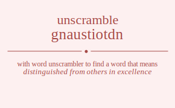

The word found after unscrambling gnaustiotdn means that distinguished from others in excellence, having a quality that thrusts itself into attention, owed as a debt, of major significance or importance, .
gnaustiotdn has jumble solution. Please see which words made after unscrambling gnaustiotdn.
Daily Jumble Solution: outstanding
You can use following links to see other word jumble solutions for the same day
doutis gnaustiotdn lufta nodent tagnr

Unscrambled 11 letter words from gnaustiotdn
outstanding
Unscrambled 10 letter words from gnaustiotdn
astounding
Unscrambled 9 letter words from gnaustiotdn
stounding
nutations
gustation
unstating
outdating
Unscrambled 8 letter words from gnaustiotdn
nuttings
stunting
snouting
sounding
undoings
titanous
nutation
outgains
toasting
attuning
nutating
taunting
notating
anginous
outstand
standout
sudation
daunting
standing
donating
Unscrambled 7 letter words from gnaustiotdn
nonsuit
touting
ousting
outings
outsing
tousing
nutting
stoning
dusting
dotting
dousing
guidons
dunting
undoing
station
instant
anoints
nations
onanist
tautogs
nougats
outsang
agoutis
tauting
stating
tasting
autoing
outgain
agonist
gitanos
antigun
guanins
antings
staning
atoning
astound
adnouns
outsaid
distant
dauting
audings
doating
ganoids
sanding
Unscrambled 6 letter words from gnaustiotdn
outsit
outsin
stotin
unions
unison
nitons
outing
toting
ingots
stingo
tigons
tuning
noting
toning
nosing
donuts
stound
studio
dittos
nudist
sundog
dingus
guidon
doting
doings
dosing
outsat
taunts
tauons
nutant
suntan
sonant
autist
tatsoi
statin
taints
tanist
titans
anoint
nation
anions
nasion
tautog
outgas
nougat
guanos
tangos
tongas
unsnag
agouti
gainst
giants
sating
gitano
guanin
anting
saning
dattos
daunts
soudan
adnoun
donnas
audits
audios
unsaid
adonis
danios
dongas
gonads
auding
dating
ganoid
Unscrambled 5 letter words from gnaustiotdn
stout
touts
stunt
snout
tonus
nouns
toits
suint
units
stint
tints
union
niton
gouts
gusto
stung
tungs
ungot
tongs
suing
using
sting
tings
ingot
tigon
dunts
donut
nodus
sound
udons
duits
ditto
doits
odist
nidus
dints
tondi
dinos
dungs
dongs
guids
dings
dingo
doing
sutta
tauts
autos
stoat
toast
taunt
aunts
tunas
tauon
tanto
santo
sunna
nonas
iotas
ostia
stoai
taint
titan
unais
antis
saint
satin
stain
tains
anion
gutta
goats
togas
gaunt
guans
angst
gnats
stang
tangs
guano
tango
tonga
agons
agist
gaits
staig
agios
giant
gains
signa
gonia
adust
dauts
datto
datos
doats
toads
daunt
stand
donas
donna
audit
adits
ditas
staid
tsadi
audio
adios
danio
gauds
dagos
goads
dangs
donga
gonad
gadis
Unscrambled 4 letter words from gnaustiotdn
tuts
tout
oust
outs
stot
tost
tots
nuts
stun
tuns
unto
nous
onus
snot
tons
nuns
sunn
noun
suit
tuis
tits
toit
unit
tint
nits
snit
tins
into
ions
inns
gust
guts
tugs
gout
togs
tung
gnus
guns
snug
sung
tong
nogs
snog
song
gist
gits
ting
gins
sign
sing
dust
stud
duos
ouds
udos
dost
dots
tods
dunt
duns
udon
undo
dons
nods
duit
dits
doit
dint
dins
dino
nodi
dugs
dogs
gods
dung
dong
guid
digs
gids
ding
taut
taus
utas
stat
tats
auto
oast
oats
stoa
taos
aunt
tuna
anus
ants
tans
nota
naos
nans
anon
nona
aits
sati
iota
unai
anti
tain
ains
anis
sain
naoi
gast
gats
stag
tags
goat
toga
goas
sago
gaun
guan
gnat
tang
nags
sang
snag
agon
gait
agio
agin
gain
daut
tads
dato
doat
toad
ados
odas
soda
ands
dans
sand
dona
adit
dita
aids
dais
sadi
said
gaud
dags
gads
dago
goad
dang
gadi
Unscrambled 3 letter words from gnaustiotdn
tut
uts
out
tot
sou
sot
nut
tun
nus
sun
uns
not
ton
nos
ons
son
nun
tui
tit
its
sit
tis
nit
tin
ins
sin
ion
inn
gut
tug
got
tog
gos
gnu
gun
nog
git
gin
duo
oud
udo
dot
tod
dos
ods
sod
dun
don
nod
dui
dit
dis
ids
din
dug
dog
god
dig
gid
tau
uta
att
tat
sau
sat
tas
oat
tao
ant
tan
nan
ait
ais
ain
ani
gat
tag
ags
gas
sag
ago
goa
gan
nag
tad
ads
sad
ado
oda
and
dan
aid
dag
gad
Unscrambled 2 letter words from gnaustiotdn
ut
us
to
os
so
nu
un
no
on
it
ti
is
si
oi
in
go
do
od
id
at
ta
as
an
na
ai
ag
ad